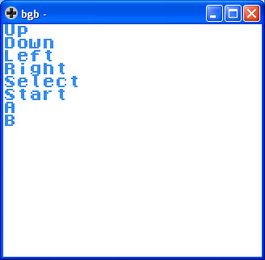

參考資訊：
https://bgb.bircd.org/
https://github.com/mrombout/gbdk_playground
http://gbdk.sourceforge.net/doc/html/book01.html
Input取得
UINT8 joypad(void);
回傳值為按鍵
main.c
#include <stdio.h>
#include <gb/gb.h>
#include <gb/cgb.h>
unsigned short palette[] = {RGB_WHITE, RGB_RED, RGB_GREEN, RGB_BLUE};
void main(void)
{
set_bkg_palette(0, 1, palette);
while (1) {
delay(100);
switch (joypad()) {
case J_LEFT: printf("Left\n"); break;
case J_RIGHT: printf("Right\n"); break;
case J_UP: printf("Up\n"); break;
case J_DOWN: printf("Down\n"); break;
case J_START: printf("Start\n"); break;
case J_SELECT: printf("Select\n"); break;
case J_A: printf("A\n"); break;
case J_B: printf("B\n"); break;
}
}
}
完成
